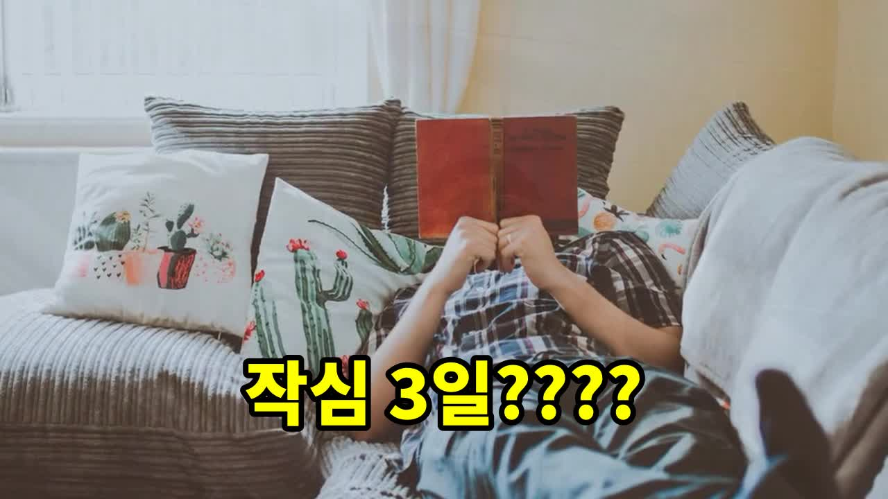

고양이가 왜 하루 13~16시간이나 잡게 되나요?

고양이의 생존 전략: 에너지 절약
고양이는 일상생활에서 하루를 평균 13~16시간을 잠에 보냅니다. 이는 사람의 두 배 이상이며, 처음엔 게을러서가 아닌 생존의 필요로 인한 현상입니다. 고양이들은 원래 사냥꾼으로 진화해 왔으며, 짧고 강렬한 사냥을 위해 에너지를 적절히 분배하고 유지해야 했습니다.
깊은 잠과 얕은 잠: 고양이의 생리학
자신들의 생존을 위한 에너지 절약 전략 때문에 고양이는 대부분 얕은 잠, 즉 양성 또는 반상태를 취합니다. 실제로 깊게 잠들어 있는 시간은 상대적으로 짧습니다. 이는 단시간에 대응할 수 있게 하기 위함이며, 소리가 들릴 때마다 즉시 반응 가능하도록 만들어진 생리적 특성이죠.
고양이의 자태와 행동: 귀의 움직임
고양이는 잠자는 것처럼 보일 수 있지만, 사실은 그들의 뇌는 항상 경계 모드에 있습니다. 이는 귀가 항상 움직이며, 소리나 움직임이 생기면 즉시 반응할 준비를 하고 있기 때문입니다. 따라서 고양이가 깊게 잠들어 있는 모습을 보면, 실제로는 그들이 에너지를 최대한 절약하고 있는 것이며, 대상이 접근하거나 위협이 있을 때는 언제나 즉각 행동에 나설 수 있도록 유지되어 있다는 사실을 확인할 수 있습니다.
자주 범하는 실수와 힌트: 잠자는 공간 선택
고양이는 자신의 안전한 공간을 선호하며, 이곳에서 가장 잘 잊게 됩니다. 하지만 많은 사람들과 달리 고양이는 항상 주변 환경에 대한 경각심을 유지해야 합니다. 따라서 집안에서 고양이가 자주 잠들게 하는 장소를 선택할 때는 안전성이 매우 중요합니다.
요약과 조언
고양이의 긴 수면 시간은 그들의 사냥꾼 본능과 에너지 절약 전략 때문입니다. 깊게 잠을 자는 것은 단시간 내에 대응하기 위한 준비가 필요하며, 귀가 항상 움직이는 이유 역시 경계 모드를 유지해야 하는 생존 수단이기 때문입니다.
따라서 고양이의 끊임없는 움직임과 흔히 보는 깊은 잠에 대한 실수 없는 이해를 통해, 우리의 반려동물에게 더 나은 환경을 제공하고, 그들의 자연스러운 행동 패턴을 존중하는 것이 중요합니다.